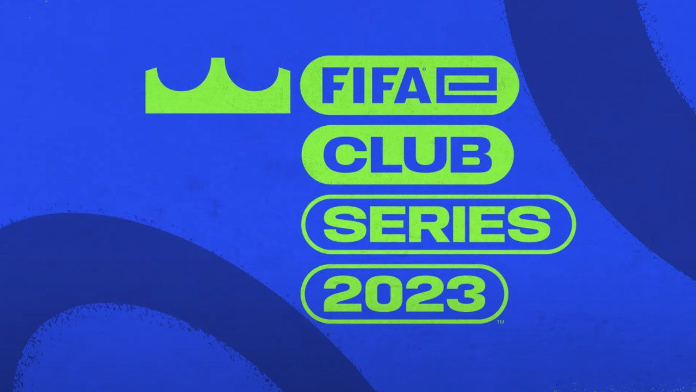
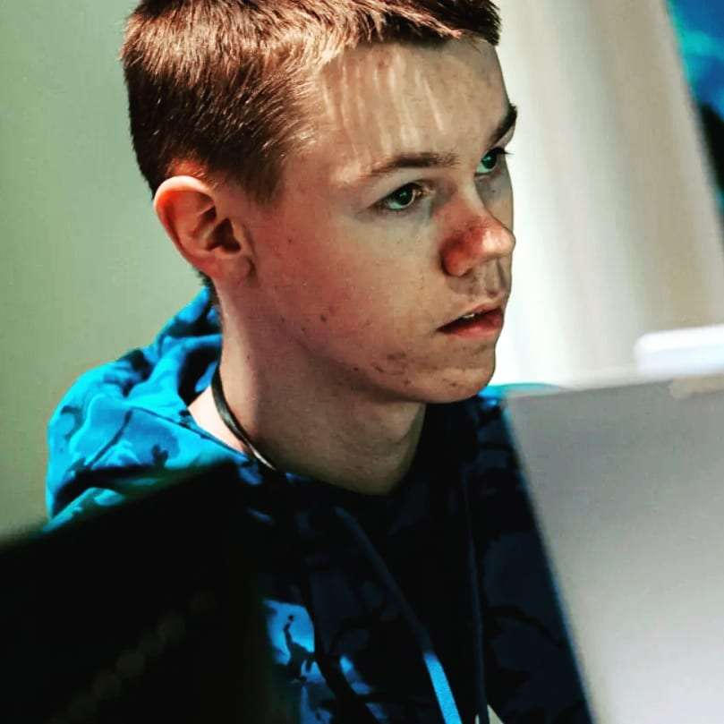
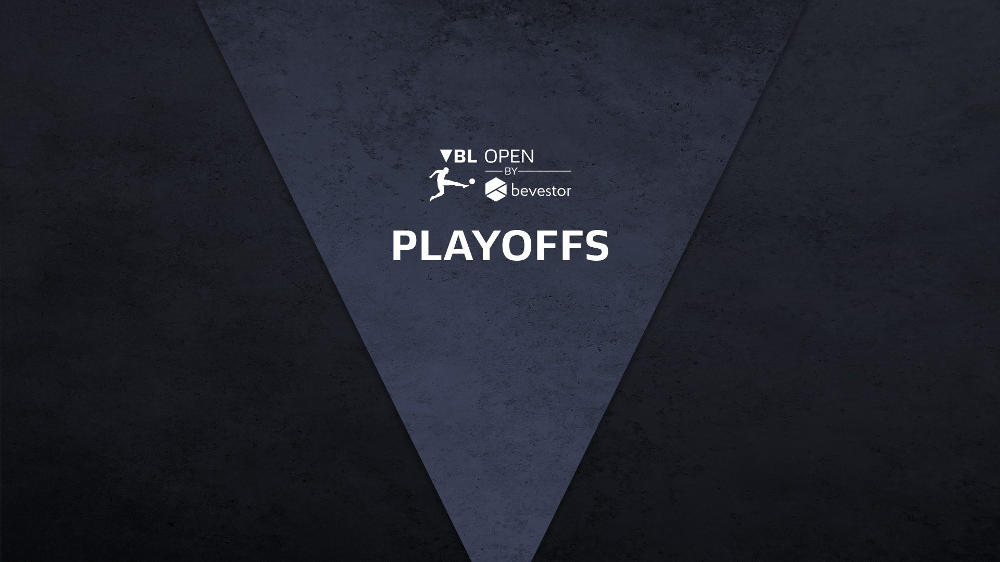

Starting off with the eChampions League Qualifier where I went 0-3. I lost against a strong FurkyPlayz who belongs to the best players in Germany.
My second round was a game that could have gone either way. It was 50/50 who is going to win here. Unfortunately, I lost that round and the 3rd round.
In the last round, I managed to to go 3:0 in front after the first game and actually scored another in the beginning of the 2nd game but somehow I conceded 8 goals in one game.
That kicked me out of the eChampions League Qualifier.

Moving on with the eClub Series 2023 in which two Pre-Qualifications were available.
In both of these qualifications, my mate and I couldn't win that many games because our performance was poor. That's why we couldn't manage to qualify for more in this tournament.
This can be applied to the DFB ePokal as well.

As mentioned in General, I had the chance to go to a bootcamp in Cologne which was organized by the eSports Player Foundation (short: EPF).
I met nice new people there and showed my skill to the coaches. At this weekend, there were workshops, talks and of course practice sessions, in which I played very good. In the end,
the coaches of the EPF chose some others and me to be a part of their support programm. Is has to be said that the EPF is a "not for profit" organization, which means that
you don't have to pay to be in there. The EPF got their money from sponsorships, e.g. from the state of North Rhine-Westphalia.
Click Here to find more about the EPF and myself.

Coming now to the Virtual Bundesliga Open Playoffs. I managed to qualify in the VBL Open in Decemeber with a score of 59 wins 0 draws and 1 lose.
In the playoffs, I had to win three round on day 1 to be in the knockouts on day 2. I won my first two rounds both 6:3 in total after two games against decent but
not pro players. In round three, I had to play against the german champ 2022 aka DullenMike.
After the first game, I was 2:4 down but managed to score two goals. Unfortunately, I conceded the game deciding goal in the 85th minute.
Now, I had to win one of the two remaining rounds against beatable players. In round 4, i had an 50/50 game where I wasn't the winner. This happened in the last round as well...
After some up and downs in this season, it was time for the VfL Bochum 1848 eSports academy finale. My intention couldn't be more clear. I live near Bochum and had to use this
chance.
It startet with the 2nd of 4 qualifiers. I played only this one and managed to win this. That meant that I'm one of eight finalists.
In Bochum, I was able to be 2nd in my group with 5 points on day 1. It could've been more but I choked a bit in both games.
On day 2, I was in the semi-finals. We played two games in that round. After two games, the score was a draw, so we went into overtime. Unfortunately, I conceded two goals and was out for the tournament.
It was clear that I wasn't the winner in that case. It turned out that they chose me because my whole package was fitting in their profile.
That's why I'm here now.